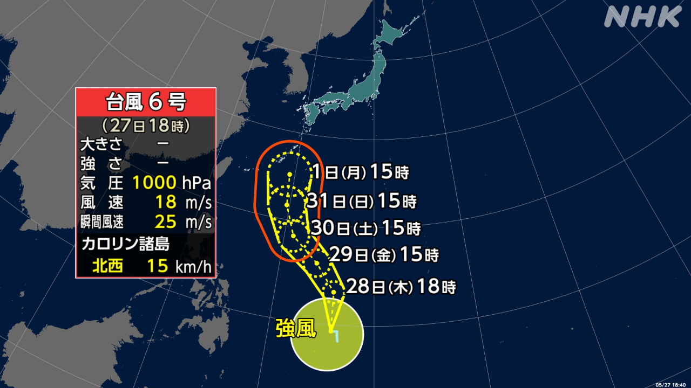

最新ニュース
1️⃣ 台風6号 来週には沖縄の近くに来るかもしれない

気象庁によると、27日の午前、日本の南の海で台風6号ができました。
台風はまだ遠いところにあって、北に進んでいます。
台風のまわりは、とても強い風が吹いています。
来週は風がもっと強くなって、沖縄の近くに来るかもしれません。
気象庁は、これからの台風の情報に気をつけてほしいと言っています。
2️⃣ 横浜市の港で「ヒアリ」が見つかった
環境省は、横浜市で「ヒアリ」が100匹見つかったと言いました。
ヒアリは強い毒を持っている外国のアリです。刺されると痛くなって亡くなる人もいます。
今月23日、たくさんの船が着く横浜市の港で見つかりました。日本でヒアリが見つかったのは、今年度初めてです。
環境省は、あまり見たことがないアリを見つけたら、触らないように言っています。そして、電話で連絡してほしいと言っています。番号は0570－046－110です。午前9時から午後5時までです。
3️⃣ 103年続いた「大阪松竹座」で最後の歌舞伎
大阪の道頓堀にある「大阪松竹座」は、有名な劇場です。
103年前にできてから今まで、たくさんの人が歌舞伎や演劇を楽しんできました。しかし、古くなったため建物を壊すことを計画しています。
26日は、最後の歌舞伎がありました。松竹座がなくなることは残念だという特別な話でした。
見ていた女性は「胸が震えました。涙を流しながら見ました」と話しました。
歌舞伎に出た片岡仁左衛門さんは最後に「きょうで終わりだと思っていません。必ずもう一度、道頓堀に松竹座ができると信じています」と話しました。
終わったあと、たくさんの人が集まって「松竹座ありがとう」と声を上げていました。
4️⃣ 奈良大学 学生たちが1300年前の時代の服を着た
奈良市にある奈良大学で、学生たちが1300年ぐらい前の時代の服を着る授業がありました。
授業を受けたのは、ふだん日本のことばや歴史、文化を勉強している学生たちです。
1300年前、日本には中国の文化が入っていました。そして赤や緑などいろいろな色の服を作っていました。服の色で、その人が社会で高い地位か低い地位かがわかりました。
学生たちは、その時代と同じようにできた服を着て、みんなに見せました。
服を着た学生は「服に飾りなどがあって、昔の人もおしゃれをしていたんだなと思いました」と話していました。
- 〜によると
- 〜ている / 〜でいる
- 〜ところ
- 〜ても / 〜でも
- 〜かもしれない / 〜かもしれません
- 〜から
- 〜ように
- 〜こと
- 〜から〜まで
- 〜まで
- 〜てから
- 〜前に
- 〜ため
- 〜がある / 〜がいる
- 〜という
- 〜ながら
- 〜ず / 〜ずに
- 〜後 / 〜あと
- 〜くらい / 〜ぐらい
- 〜など
- 〜や〜など
- 〜と思う
vebaev.github.io
Generated: 2026-05-27 12:53:26 UTC